10g (9.0.4)
Part Number B10270-01
Library |
Contents |
Index |
| Oracle Discoverer Administrator Administration Guide (Online Help) 10g (9.0.4) Part Number B10270-01 |
|
This chapter explains how to maintain items and item classes using Discoverer Administrator, and contains the following topics:
A Discoverer item is a representation in the End User Layer of one of the following:
Items are stored in folders and can be created, deleted and moved between folders. Items have properties that you can change (e.g. display name, formatting details). Items enable Discoverer end users to access and manipulate information until they find the information they want.
Item classes are groups of items that share some similar properties. An item class enables you to define item properties once, and then assign the item class to other items that share similar properties.
For example, assume the Product folder includes an item called Product Name that describes each product. A similar item also called Product Name may be required in the Sales Revenue folder. To enable both items to share common properties (e.g. a list of values), you might create one item class to define the properties, and apply it to both items. In other words, you only have to define the properties once. Without the item class, you would have to define the properties individually for each item.
Discoverer uses item classes to implement the following features:
As the Discoverer manager, it is your responsibility to create suitable item classes to support these Discoverer features. You can create a different item class for each feature or you can specify that Discoverer uses the same item class for more than one feature. Note that an item class to support an alternative sort must also support a list of values.
A list of values (or 'LOV') is a set of valid values for an item. The values are those values in the database column on which the item is based. Discoverer end users use LOVs to display values or enter values in:
For example, assume that an item is based on a database column (e.g. Region) that contains the following values:
| Region |
|---|
|
West |
|
East |
|
South |
|
North |
|
East |
|
North |
|
South |
An LOV based on this item might contain five distinct values:
Discoverer uses item classes to implement LOVs. When you first create a business area, you can specify that LOVs are to be generated automatically (for more information, see "Load Wizard: Step 4 dialog"). Subsequently, you can use the Item Class Wizard to create new LOVs and assign existing LOVs to other items (for more information, see "How to create a LOV item class").
An alternative sort is an instruction to Discoverer about how to sort the values in an item. Alternative sorts enable you to specify a different sort order to the one that Discoverer uses by default.
By default, Discoverer sorts items in ascending or descending order using ASCII values. However, Discoverer end users might require some items to be sorted in a different order.
For example, by default, Discoverer sorts a series of sales regions alphabetically (e.g. Central, East, North, South, West). But Discoverer end users might need sales regions sorted in a different order (e.g. North, South, East, West, Central).
To create an alternative sort order, you must use an item class to link together two items:
Having defined the item class, you associate that item class with the item that Discoverer end users will include in their worksheets.
There are a number of ways to implement alternative sorts, including:
Regardless of the way you choose to implement an alternative sort, note the following:
For information about how to create an alternative sort item class, see "How to create an alternative sort item class".
You can use a custom folder to implement an alternative sort by using the folder's Custom SQL property to create two items. One item contains the list of values and the other item specifies the sort order. You can then create an item class and specify the two items in the custom folder as the item class's LOV and alternative sort respectively.
For example, you might want Discoverer end users to include an item called Ordered Regions in their worksheets. When users sort the values in this item, you want the order of the sales regions to be North, South, East, West (i.e. not the default alphabetical order). To implement this alternative sort using a custom folder, you might:
select 'North' region_name, 1 region_order from dual union select 'South' region_name, 2 region_order from dual union select 'East' region_name, 3 region_order from dual union select 'West' region_name, 4 region_order from dual union
You can use a database table to implement an alternative sort by creating a new database table with two columns containing the values and their associated numerical order. If a suitable database table containing the values and their associated numerical order already exists, consider using that table. To avoid performance issues, avoid using a database table that contains more than one occurrence of each value.
Having loaded the table into the EUL as a folder, you can then create an item class and specify the two items for the item class's LOV and alternative sort respectively.
For example, you might want Discoverer end users to include an item called Ordered Regions in their worksheets. When users sort the values in this item, you want the order of the sales regions to be North, South, East, West (i.e. not the default alphabetical order). To implement this alternative sort using a database table:
> create table SALES_REGION_SORT (REGION_NAME VARCHAR2(10), REGION_NUMBER NUMBER(2));
> insert into SALES_REGION_SORT (REGION_NAME, REGION_NUMBER) values ('North', 1) > insert into SALES_REGION_SORT (REGION_NAME, REGION_NUMBER) values ('South', 2) > insert into SALES_REGION_SORT (REGION_NAME, REGION_NUMBER) values ('East', 3) > insert into SALES_REGION_SORT (REGION_NAME, REGION_NUMBER) values ('West', 4)
You can use a calculated item with a DECODE statement to implement an alternative sort. You create two new items in an existing folder and specify the SQL statements for those items so that they contain the list of values and the sort order. You can then create an item class and specify the two items for the item class's LOV and alternative sort respectively.
If an item containing the list of values already exists in the folder, you can use that item.
For example, you might want Discoverer end users to include an item called Ordered Regions in their worksheets. When users sort the values in this item, you want the order of the sales regions to be North, South, East, West, Central (i.e. not the default alphabetical order). To implement this alternative sort using a calculated item and a DECODE statement:
DECODE(Ordered Regions,'North',1,'South',2,'East',3,'West',4 ,5)
Note: In performance terms, this is the least efficient mechanism.
A drill to detail is a relationship between two or more items that might otherwise be unrelated. Drill to detail is achieved using an item class and gives Discoverer end users direct access to detail information about the currently selected row from other folders, without having to drill through hierarchical levels.
When you create a drill to detail item class, you specify the items that use that item class. The folders containing the items that share the item class do not have to be joined.
When a user selects the drill to detail option for one item, any folders containing other items that share the same drill to detail item class are available for drilling. If the user selects one of those folders, the worksheet contains all the items in the selected folder and conditions are applied for all the item classes that it has in common with the original sheet.
Note that for a hyperdrill to work, items that share the same drill to detail item class must have the same data type.
Date items are items that users include in worksheets to show date information.
Date items can be:
A date format mask is an instruction about how to display date information.
The table below shows how a number of dates are stored in the database, and the affect of applying different date format masks to those dates.
As the Discoverer manager, you can specify a default date format mask for date items that users include in their worksheets.
Note that date format masks have no effect on the way the date is stored in the database.
When you create a new level in a date hierarchy template, you specify a date format for the new level. If you include that new level in the date hierarchy, Discoverer automatically creates a new date item in any folders with date items that use that date hierarchy.
The formula of the new date item is:
where:
The date format you specified for the new level in the date hierarchy template is also used to set the Format Mask property of the new date item.
Truncating date items involves extracting and manipulating individual elements of a date (e.g. the month, the quarter, the year). Truncating date items is useful when comparing dates. Discoverer uses truncated date items to implement date hierarchies.
The EUL_DATE_TRUNC function truncates a date value to a specified date format mask. Using EUL_DATE_TRUNC has several benefits:
Discoverer uses EUL_DATE_TRUNC automatically when creating date hierarchies. You can also use EUL_DATE_TRUNC yourself when entering a formula for a date item.
Note that EUL_DATE_TRUNC always returns dates that comprise day, month, and year elements. If one of these elements is not included in the specified format mask, EUL_DATE_TRUNC uses 01-JAN-1900 as a default date to provide the missing elements. For example:
It is likely that the default values that EUL_DATE_TRUNC returns for the missing date elements will be inappropriate or not required. We therefore recommend that you specify (i.e in the EUL_DATE_TRUNC formula) all of the date elements that you want to display. Or put another way, that you only display those date elements that you specified in the EUL_DATE_TRUNC function call.
You can include a truncated date item in a condition. The value you specify for the condition must be in the same format as the date format mask of the truncated date item.
Note the following:
To resolve this situation, change the date item's formula to truncate dates to DD-MON-YYYY.
Assume the formula of a date item is EUL_DATE_TRUNC(order_date,'YYYY') and the item is included in a condition as order_date='2001':
Assume you have used EUL_DATE_TRUNC to truncate a date item called order_quarter_date, and you want to include the order_quarter_date item in a condition. If the date format mask of the truncated item is 'Q', the formula of the item must use the same date format mask (i.e. EUL_DATE_TRUNC(order_quarter_date,'Q')).
From a Discoverer perspective, a database column can contain data itself (e.g. regions, order numbers) or pointers to where data is located outside the database (e.g. names of files containing pictures of stores, URLs). You can set an item property to specify a pointer for Discoverer end users to drill to data outside the database.
To specify the location of the data of the column on which an item is based, use the item's Content Type property as follows (for more information, see "Item Properties dialog"):
When users include an item that has its Content Type property set to FILE, Discoverer displays the pointers contained in the column. If a user clicks the pointer, Discoverer launches the application associated with the pointer. For example:
If the datatype of the column is LONG RAW, the column can contain different kinds of data, including:
If the datatype of the column on which an item is based is LONG RAW, Discoverer provides additional options for the item's Content Type property (i.e. options in addition to FILE and NONE). These options enable you to specify how Discoverer decides which application to launch to view the column's content. For example, if you select DOC as the item's Content Type property, Discoverer will launch the application associated with the .DOC extension (usually Microsoft Word).
To edit item properties:
You can select more than one item at a time by holding down the Ctrl key and clicking another item.
Note: Where you select multiple items, all properties that are common to each of the selected items are displayed. If the data for a field is not common to each of the selected items, the field is blank.
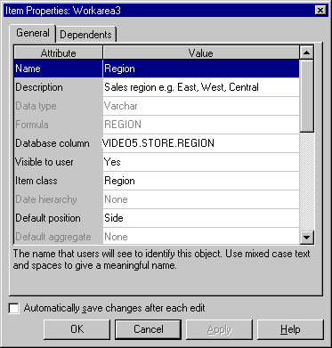
To create a LOV item class:
If Discoverer displays the "Item Class Wizard: Step 2" press the <Back button.
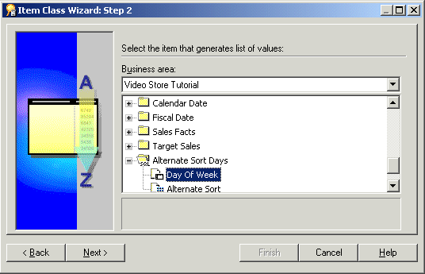
Note: By default, Discoverer uses a SELECT DISTINCT query to retrieve a list of values. If you select an item in a folder with a large number of rows compared to the number of distinct values, then the query can be inefficient. It is more efficient to select an item from a smaller table (attached to the folder with a large number of rows) rather than using the large table itself. If a smaller table does not exist, it might be worth creating it to speed up the list of values process.
Alternatively if you have a small number of values, use a custom folder to create a local list of values within the End User Layer. For more information, see "How to create a list of values using a custom folder".
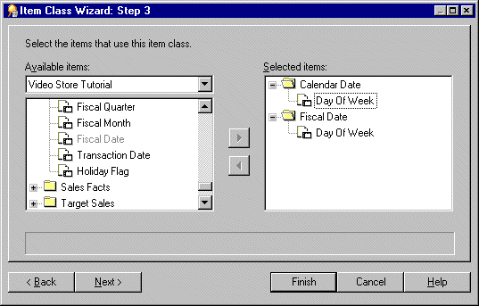
Note: If you had also selected the Drill to detail check box on the first page of the Item Class Wizard, end users will be able to drill between any of the items that you select on this page.
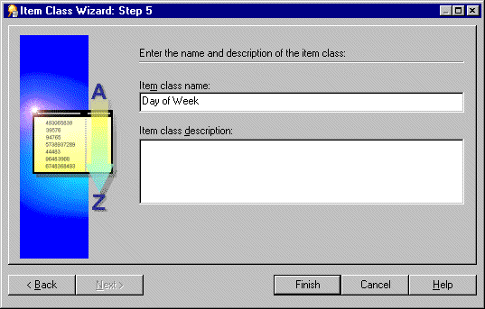
Discoverer creates a new List of Values item class.
An alternative sort item class enables you to sort a list of values based on an alternative sort sequence.
To create an alternative sort item class:
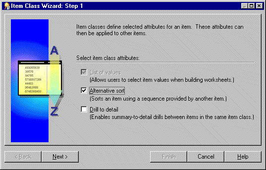
Note: If you select the Alternative sort check box, the List of values check box is automatically selected.
Note: Discoverer uses a SELECT DISTINCT query to retrieve a list of values. If you select an item in a folder with a large number of rows compared to the number of distinct values, then the query can be inefficient. It is more efficient to select an item from a smaller table (attached to the folder with a large number of rows) rather than using the large table itself. If a smaller table does not exist, it might be worth creating it to speed up the list of values process.
Alternatively if you have a small number of values, use a custom folder to create a local list of values within the End User Layer. For more information, see "How to create a list of values using a custom folder".
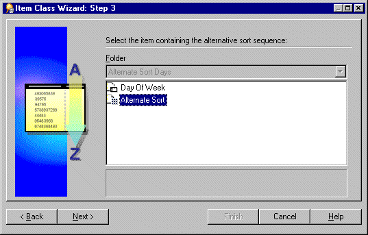
This item must:
Hint: Alternatively, if you have a small number of values, use a custom folder to create a local list of values containing an alternative sort order within the End User Layer see "Example 1: Using a custom folder to implement alternative sorts".
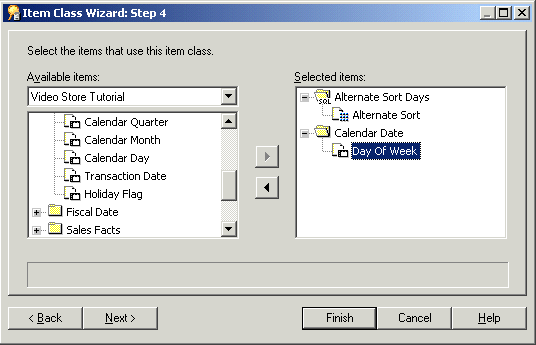
Note: If you selected the Drill to detail check box on the first page of the Item Class Wizard, end users will be able to drill between any of the items that you select on this page.
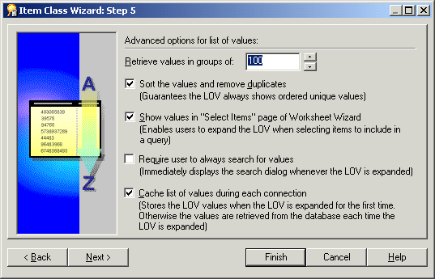
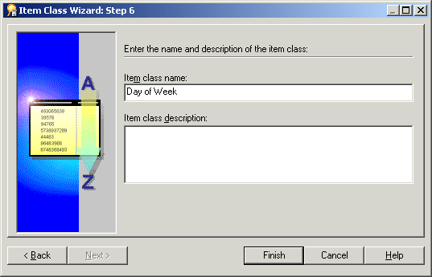
To create a drill to detail item class:
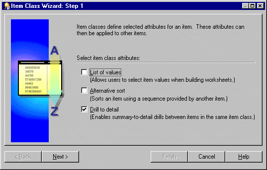
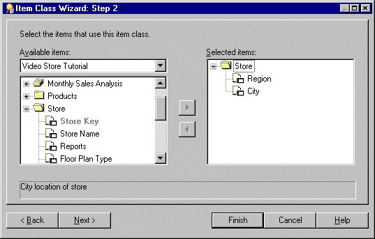
Note: End users will be able to drill between any of the items that you select on this page.
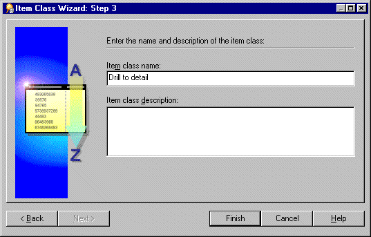
This alternative method is useful if you have a small number of values. You can use a custom folder to create a local list of values within the End User Layer.
For example, if you want a list of values for North, South, East, and West, create a custom folder called Region_lov and type in the SQL statements suggested below.
SELECT 'NORTH' REGION FROM sys.dual
UNION
SELECT 'SOUTH' REGION FROM sys.dual
UNION
SELECT 'EAST' REGION FROM sys.dual
UNION
SELECT 'WEST' REGION FROM sys.dual
This query creates one item Region, that can now be used as a list of values which will help optimize performance.
For more information about custom folders, see Chapter 5, "What are custom folders?".
To edit an existing item class:
Note: The Edit Item Class dialog consists of five tabs. These resemble the pages in the Item Class Wizard and enable you to edit the settings you specified when you created the item class.
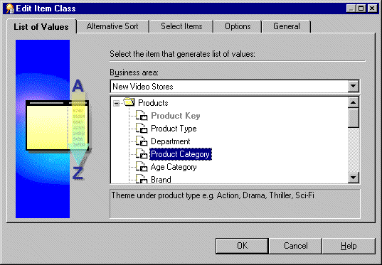
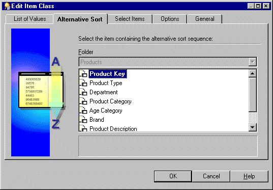
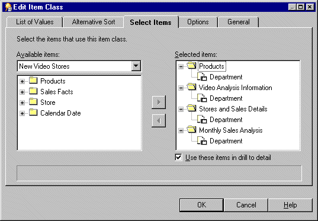
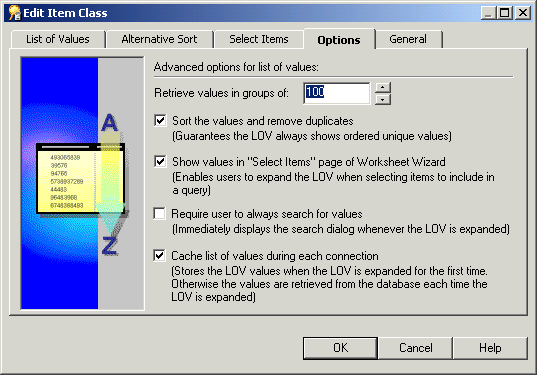
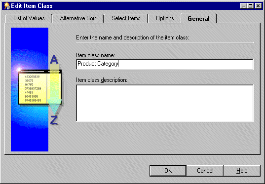
Use one of the following methods to add items to an item class:
You can select more than one item at a time by holding down the Ctrl key and clicking another item.
Note: The Available items drop down list enables you to select items from any open business area.
For more information see "How to edit an item class".
For more information, see "How to edit item properties".
Use one of the following methods to remove items from an item class:
You can select more than one item at a time by holding down the Ctrl key and clicking another item.
For further information, see "How to delete items and item classes".
You can select more than one item at a time by holding down the Ctrl key and clicking another item.
For more information, see "How to edit an item class".
For more information, see "How to edit item properties".
To view the items that use a specific item class:
This reveals two objects under the item class.
To view the list of values associated with an item:
To view the list of values associated with an item class:
This reveals two items under the item class:
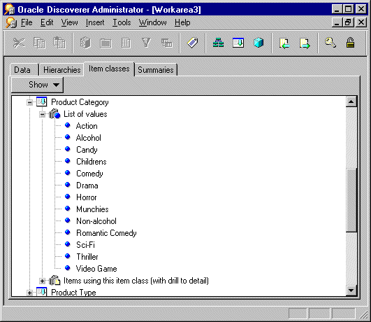
To delete items and item classes:
You can select more than one item or item class at a time by holding down the Ctrl key and clicking another one.

The Impact dialog enables you to review the other EUL objects that might be affected when you delete an item or item class.
Note: The Impact dialog does not show the impact on workbooks saved to the file system (i.e. in .dis files).
When a table is created, a datatype must be specified for each of the columns in the table. Oracle provides a number of built-in datatypes (e.g. number, date, varchar2) as well as several categories for user-defined datatypes (e.g. object types, varrays, nested tables). User-defined datatypes are sometimes called abstract datatypes. User-defined datatypes use Oracle built-in datatypes and other user-defined datatypes as the building blocks of types that model the structure and behavior of data in applications.
Note that when you create a Discoverer folder based on a table using the Load Wizard, any columns that have user-defined datatypes are ignored (i.e. no items are created in the folder).
If you want to include an attribute of a user-defined datatype as an item in a Discoverer folder, you must do one of the following:
To access the attributes of a user-defined datatype, you will have to be familiar with the appropriate syntax. For more information about user-defined datatypes and accessing their attributes, see the Oracle documentation supplied with your version of the database.
|
|
 Copyright © 2003 Oracle Corporation. All Rights Reserved. |
|